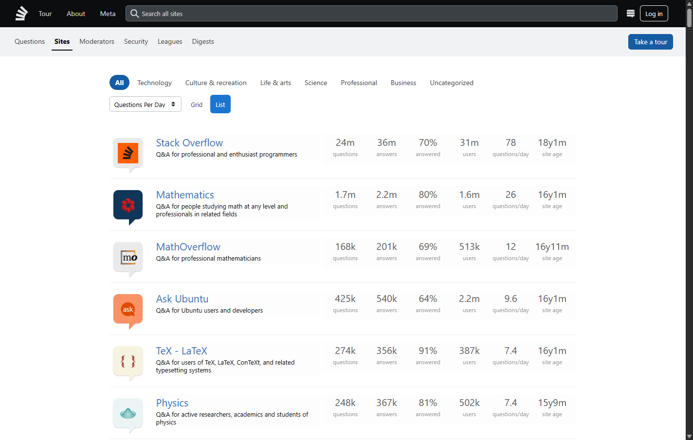
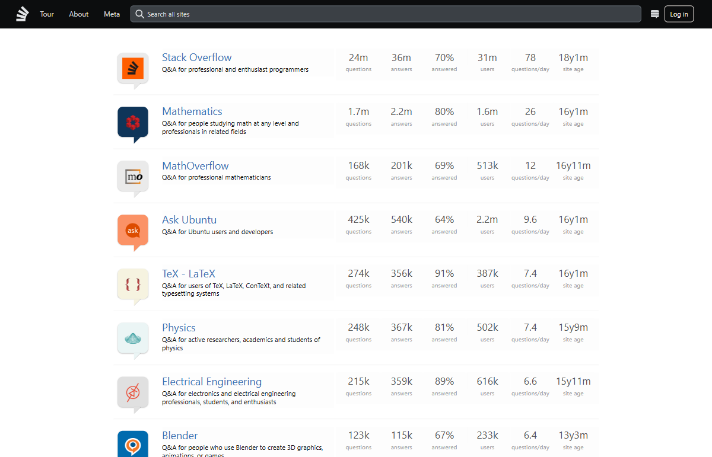
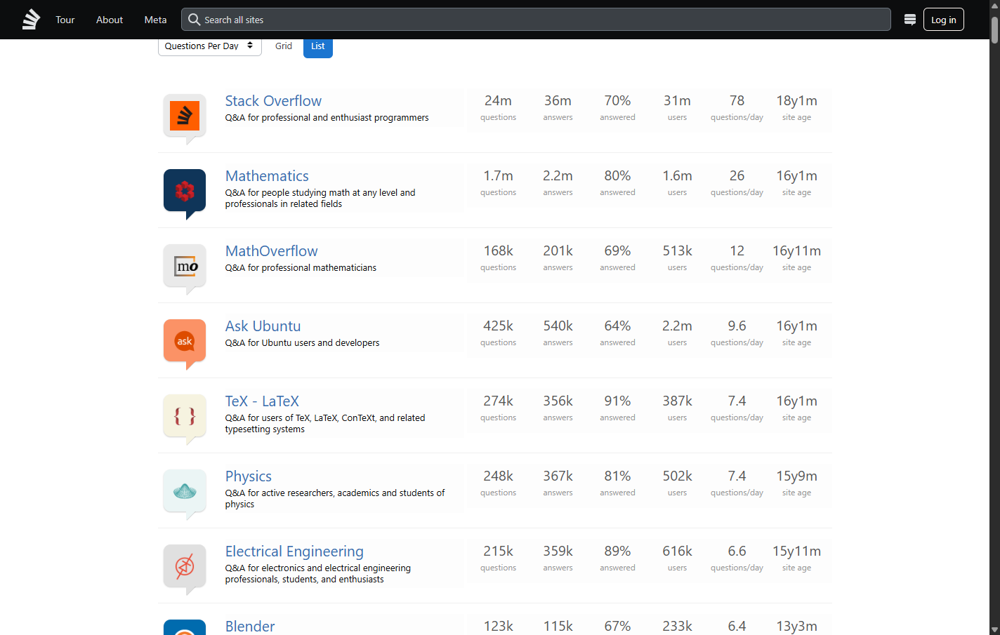

Codex · v1 · raw audit pass
The saved final screenshot shows the expected ranking and activity values; the cell is excluded with its task.
Pilot report · 23 August 2026
Claude Opus 5 and Codex GPT‑5.6 Terra at high reasoning, judged cell-by-cell by GPT‑5.6 Luna at max reasoning.
Executive conclusion
All four cells launched, produced auditable traces, were judged by the requested model, and cleaned up correctly. The only selected task triggered Cloudflare in two cells, so the task-wide CAPTCHA rule excludes all four cells from every benchmark score and timing comparison. The official result is therefore no score—not a 50% tie. The raw judge outcomes remain useful diagnostic evidence.
gpt-5.6-terra, reasoning high.claude-opus-5, CLI-default effort.gpt-5.6-luna, reasoning max, verified in all four judge logs.41108b8676d4bdb58b26ab3b079c0b7b0f8f3926, package 0.1.9.7cc604a50c7458e880156ea24f016d9431d86f6f, package 0.1.0.OpenAI’s official model pages confirm that GPT‑5.6 Terra supports high reasoning and GPT‑5.6 Luna supports max reasoning.
| Agent | Harness | Order | Raw audit result | Benchmark scoring | Agent time | Total time | Turns | Commands | Shots | CAPTCHA |
|---|---|---|---|---|---|---|---|---|---|---|
| Codex Terra high | v1 | 0 | Pass | Excluded | 263.8s | 279.2s | 1 | 30 | 3 | No |
| Codex Terra high | v2 | 1 | Fail | Excluded | 70.4s | 87.1s | 1 | 6 | 2 | Yes |
| Claude Opus 5 | v2 | 0 | Pass | Excluded | 247.6s | 261.9s | 37 | 18 | 2 | No |
| Claude Opus 5 | v1 | 1 | Fail* | Excluded | 391.6s | 406.2s | 56 | 31 | 2 | Yes |
*Claude/v1 returned the same five names as the passing cells after clearing the challenge. All four rows are excluded because CAPTCHA was observed anywhere on this task; pass/fail values above are preserved only as raw judge evidence.
Because v1 was first for Codex and v2 was first for Claude, the alternate ordering prevented one harness from receiving all first positions. It also revealed that the live site/IP state, rather than the harness label, dominated this sample.

The saved final screenshot shows the expected ranking and activity values; the cell is excluded with its task.
The second arm never reached the required list and accurately reported that it could not determine the answer.

The first Claude arm reached the same ranking and returned names plus activity values; the cell is excluded with its task.
The second Claude arm hit the same site defense seen by Codex/v2.

The final evidence shows the correct ranking after the challenge. Luna noted that the names were correct, then applied the cell-level judge rule; task-wide reporting excludes the entire task regardless.
| Cell | Commands | Screenshots | Token signal | Interpretation |
|---|---|---|---|---|
| Codex · v1 | 30 | 3 | 837,963 input; 777,728 cached; 8,449 output; 2,613 reasoning | Successful but long, command-heavy trajectory. |
| Codex · v2 | 6 | 2 | 152,728 input; 116,224 cached; 1,531 output; 387 reasoning | Early exit at challenge; not a fair speed comparison. |
| Claude · v2 | 18 | 2 | 66,015 cache-created; 755,529 cache-read; 215 output | Successful, fewer harness calls than the other successful cell. |
| Claude · v1 | 31 | 2 | 58,795 cache-created; 1,021,592 cache-read; 342 output | Challenge recovery dominated the trajectory. |
Codex and Claude expose different token accounting fields; cross-vendor token totals are not directly comparable. Within-vendor comparisons are also confounded here by CAPTCHA and early exit.
The benchmark successfully isolated workspaces, Chrome profiles, screenshots, harness daemons, and provenance. No process from this comparison remained after completion. The reporting layer now also applies task-wide CAPTCHA exclusion, preventing clean cells from the same contaminated task from leaking into aggregate score or timing.
Do not publish a v1-versus-v2 score or winner from this run. The defensible result is: the paired runner executed correctly; the sole selected task triggered CAPTCHA and is excluded in full; zero tasks remain scored; and the four raw cell outcomes are retained only to diagnose the strong second-arm site-state effect.
Recommended actions and a staged next-run design are documented in the benchmark improvement report.